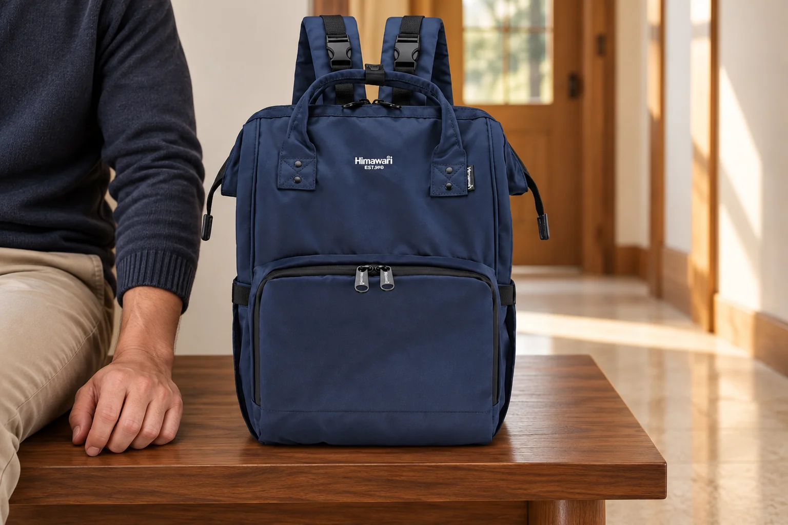
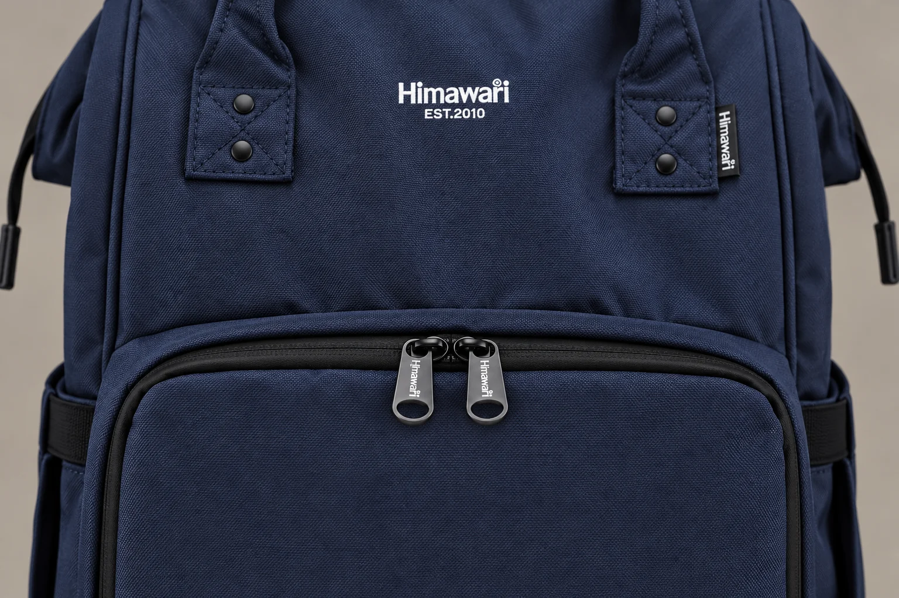
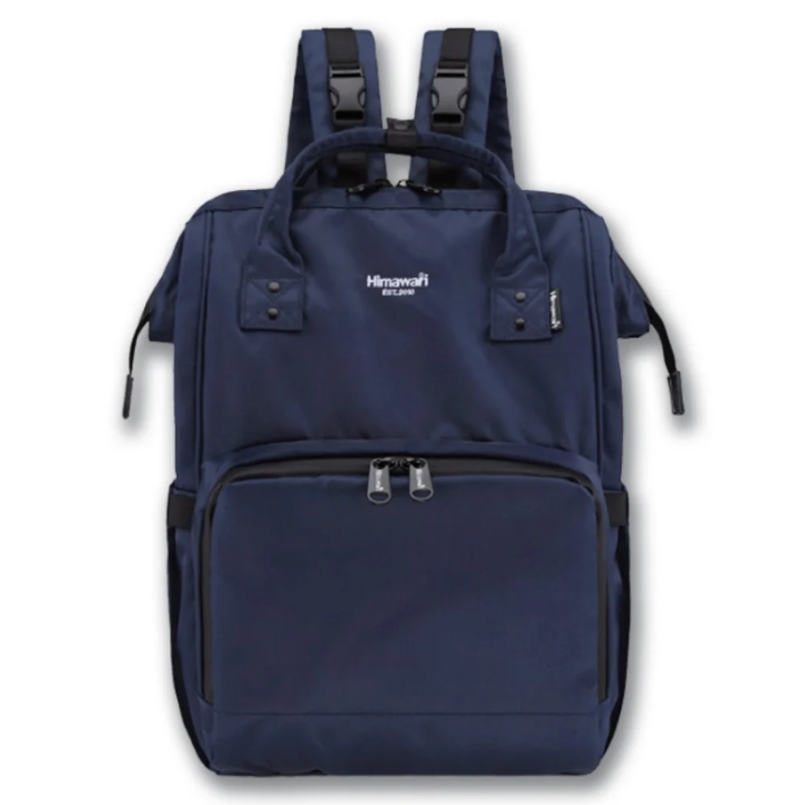

백팩 지퍼 손잡이가 두 개라면, 닫는 위치는 어디가 좋을까

백팩 앞 포켓을 닫고 나면 지퍼 손잡이 두 개가 나란히 남습니다. 사진에서는 보통 가운데에 놓여 있어 그 자리가 정답처럼 느껴질 수 있습니다. 하지만 두 슬라이더가 마주 보는 구조에서는 어떤 지점에서 만나게 닫는지에 따라 다음에 손을 뻗을 위치도 달라집니다. 가운데의 반듯한 모양을 좋아하는지와 실제로 잡기 편한 곳이 어디인지는 함께 생각해볼 수 있는 문제입니다.
No.1211 네이비의 실제 사진을 보면 큰 앞 포켓의 윗부분에 손잡이 두 개가 모여 있습니다. 검은 지퍼 선은 포켓의 둥근 모서리를 따라 이어지고, 그 위쪽에는 별도의 본체 입구와 손잡이가 있습니다. 이 글에서는 앞 포켓의 두 지퍼 손잡이를 관찰의 출발점으로 삼습니다. 제품 외부 크기는 제조사 카탈로그 기준 가로 26 × 세로 40 × 폭 17cm이며, 이 값이 앞 포켓 입구의 길이를 뜻하지는 않습니다.
손잡이 두 개와 슬라이더 두 개
손가락으로 잡아당기는 얇은 부분은 손잡이이고, 지퍼 선을 따라 움직이는 몸체가 슬라이더입니다. 손잡이를 세는 것만으로 작동 방식을 모두 알 수는 없습니다. 하나의 슬라이더에 서로 다른 방향에서 잡는 손잡이가 달린 구조와, 같은 지퍼에 슬라이더 두 개가 놓인 구조는 구분해야 합니다. 사진을 볼 때에는 손잡이의 위쪽 끝이 어느 몸체에 연결되는지까지 따라가보면 도움이 됩니다.
YKK KOREA의 지퍼 기능 분류에서도 두 슬라이더의 머리가 마주 보는 형태와 아래쪽이 마주 보는 형태를 나누어 소개합니다. 따라서 “양방향 지퍼”라는 말 하나로 가방과 옷의 여닫기를 같게 생각하지 않는 편이 정확합니다. 이 자료는 일반적인 구조와 용어를 확인하기 위한 참고이며, No.1211에 해당 업체의 부품이 사용되었다는 뜻은 아닙니다.

머리가 마주 보는 두 슬라이더 방식에서는 두 몸체가 만나는 곳과 서로 떨어져 열린 구간을 구분해 볼 수 있습니다. 닫을 때에도 손잡이의 끝이 가까운지만 보지 않고 슬라이더가 제대로 만나고 지퍼 선이 이어졌는지 살핍니다. 장식처럼 늘어진 손잡이끼리는 닿아 있어도 그 위의 몸체 사이에 틈이 남아 있을 수 있습니다. 손잡이가 예쁘게 나란한 모습과 여밈이 닫힌 상태를 별도로 보는 이유입니다.
가운데에 모아 두는 방식
앞 포켓 윗부분의 가운데는 가방을 정면으로 놓았을 때 찾기 쉬운 기준점입니다. 가방을 책상이나 무릎 위에 두고 양손을 사용하는 사람이라면 두 손잡이가 어디에 있는지 한눈에 볼 수 있습니다. 다음에 열 때에도 가운데에서 시작한다는 습관을 만들 수 있습니다. 원본 사진 속 배치처럼 좌우가 나뉘어 보여 디자인 면에서도 정돈된 인상을 줄 수 있습니다.
반면 가운데로 되돌려 닫으려면 매번 두 슬라이더의 위치를 맞추는 동작이 필요할 수 있습니다. 한쪽만 조금 열었다가 그대로 닫는 사람에게는 그 동작이 자연스럽겠지만, 양쪽을 크게 열고 물건을 꺼낸 뒤에는 손잡이를 각각 찾아야 합니다. 어느 방식이 빠르다고 단정하기보다 실제로 얼마나 자주 넓게 여는지부터 생각해볼 만합니다. 사진처럼 정확히 대칭을 맞추는 것이 여밈의 필수 조건인 것은 아닙니다.
중앙에서 손잡이를 찾기 어렵다면 그 이유도 구체적으로 봅니다. 위쪽 손잡이나 추가 장식이 가까운지, 가방을 놓는 방향 때문에 지퍼 선이 자신에게서 멀어지는지 확인할 수 있습니다. 물건을 꺼내는 동안 본체를 돌려놓았다면 닫은 뒤의 위치도 처음과 달라 보입니다. 지퍼의 위치와 가방 자체의 방향을 나누어 보면 손이 헤매는 원인을 더 쉽게 찾을 수 있습니다.

한쪽에 모아 두는 방식
제품의 정상적인 작동 범위 안에서 두 슬라이더를 한쪽에 모을 수 있다면, 한곳에서 손잡이를 찾는 습관을 택할 수 있습니다. 가방을 늘 같은 방향으로 선반에 놓는 사람은 자신에게 가까운 쪽이 편하게 느껴질 수 있습니다. 다만 오른손잡이라고 무조건 오른쪽이 낫지는 않습니다. 다른 손이 가방을 어디서 받치는지, 포켓을 자기 쪽으로 얼마나 돌려놓는지에 따라 손의 경로가 달라집니다.
한쪽 끝에서 시작해 포켓을 크게 열려면 손잡이가 이동할 길도 생각해야 합니다. 곧은 윗부분에서 둥근 모서리로 넘어갈 때에는 지퍼 선을 따라 동작이 바뀝니다. 가방을 움직이지 않으려 한 방향으로 계속 잡아당기기보다 본체를 안정되게 받치고 제품의 여밈 방향에 맞추어 사용합니다. 움직임이 멈춘 지점은 힘으로 넘기기 전에 원단이나 내용물이 끼었는지 확인할 곳입니다.
두 슬라이더를 한쪽으로 모으는 행동을 잠금장치처럼 해석하지는 않습니다. 손잡이에 구멍이 보인다는 사실만으로 자물쇠를 달 수 있는 설계나 보안 성능이 확인되지도 않습니다. 부품에 임의로 고리를 끼우면 손잡이를 잡는 위치와 움직임이 바뀔 수 있습니다. 잠금 기능이 필요한 사용이라면 그 기능이 제품 설명에 실제로 있는지 확인해야 합니다. 여기서 비교하는 것은 일상적인 개폐의 시작 위치입니다.
열기 쉬운 자리에서 닫힘을 확인하는 자리까지
두 방법을 비교하고 싶다면 가방을 안정된 곳에 놓고 평소 사용할 정도의 물건을 담은 상태에서 같은 앞 포켓을 열고 닫아봅니다. 첫 번째에는 가운데, 다음에는 정상 작동 범위의 한쪽으로 위치를 바꾸어 봅니다. 어느 쪽에서 손잡이를 먼저 찾았는지, 넓게 열 때 본체를 다시 돌려야 했는지를 기억하면 됩니다. 움직이는 중에 뒤로 손을 뻗어 시험할 필요는 없습니다.
닫은 뒤에는 선택한 위치를 찾는 일과 여밈이 이어졌는지 확인하는 일을 연결합니다. 두 손잡이를 모았더라도 포켓 입구 사이에 천이나 물건의 일부가 남았는지 봅니다. 같은 위치에서 반복해서 걸린다면 손잡이를 다른 쪽에 두는 것만으로 해결하려 하지 말고 내용물과 여밈 상태를 확인합니다. 이 비교는 고장 난 지퍼를 수리하는 방법이 아니며, 정상적으로 움직이는 가방의 사용 습관을 고르는 과정입니다.
가운데에 모아 두면 정면에서 기준점이 분명하고, 한쪽에 모아 두면 자신이 자주 손을 뻗는 위치와 맞출 수 있습니다. 대신 각 방식에서 넓게 열고 다시 닫는 동작이 어떻게 이어지는지 살펴야 합니다. 며칠 써 본 뒤 손잡이를 자꾸 다른 곳에서 찾게 된다면 가방을 놓는 방향부터 다시 볼 수 있습니다. 보기 좋은 위치와 반복해서 찾기 쉬운 위치가 만나는 곳을 자신의 기준으로 남겨두세요.